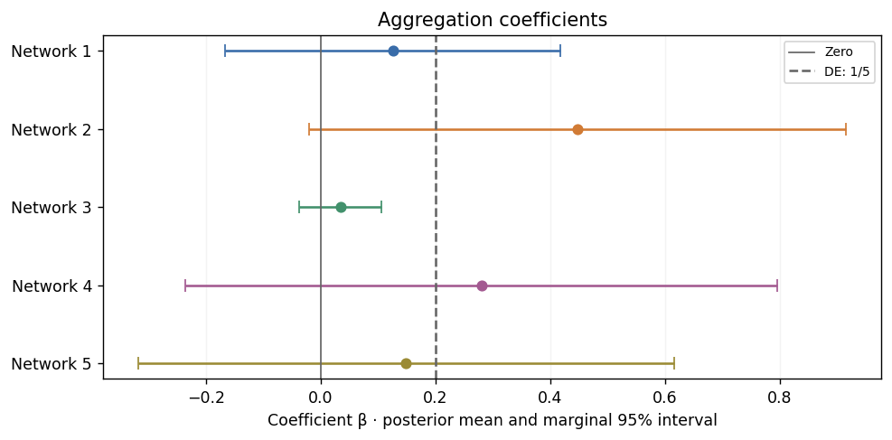
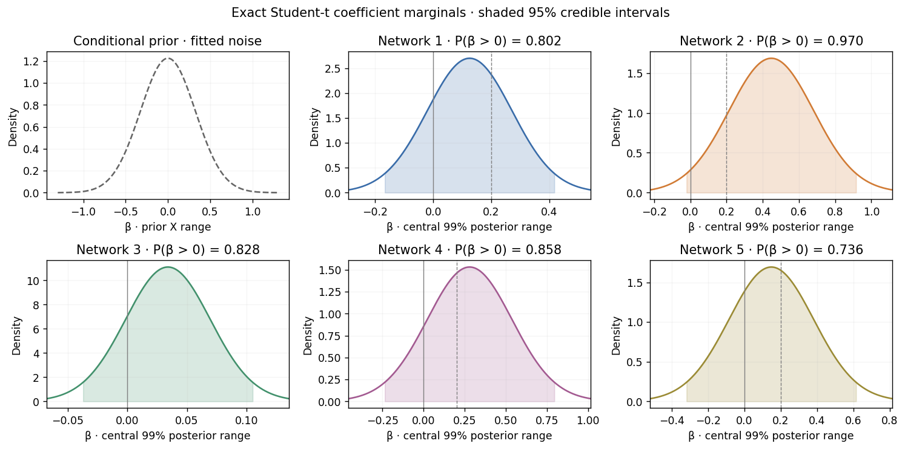
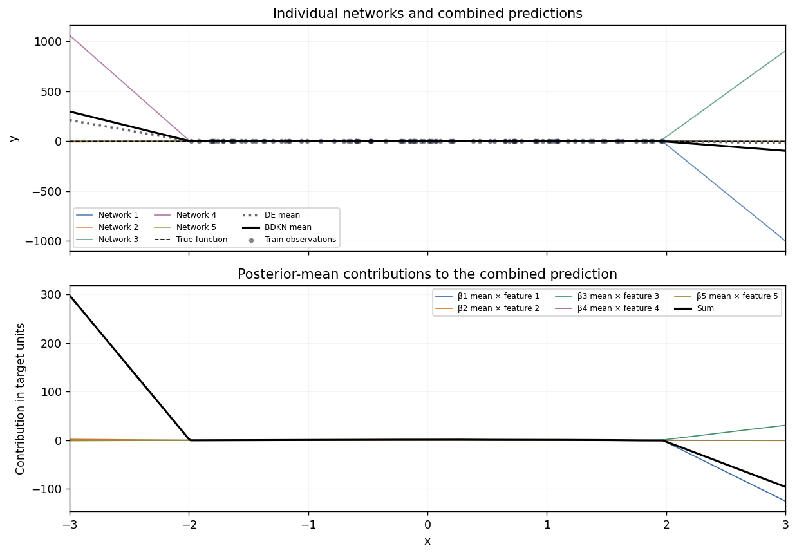
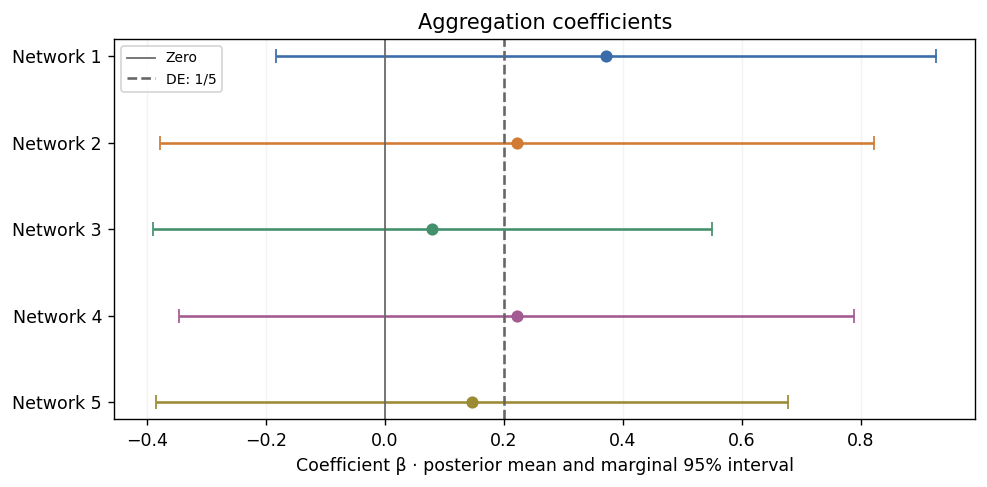
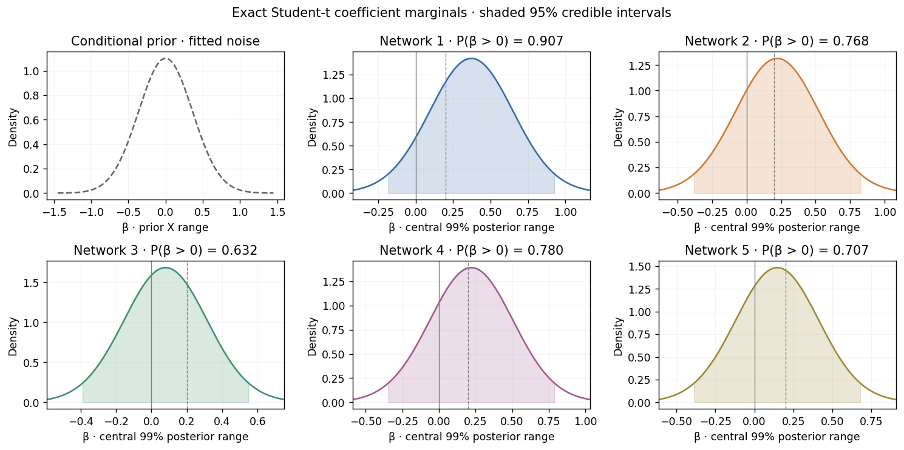
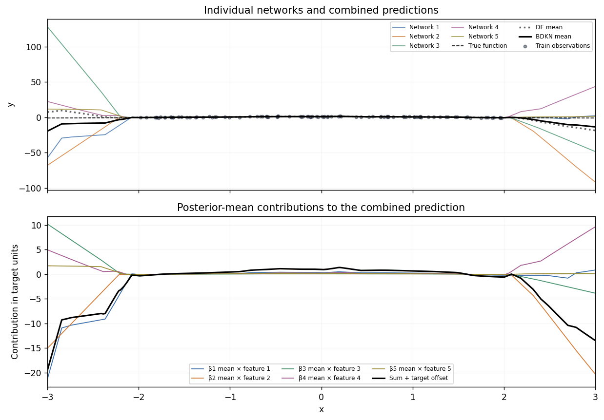
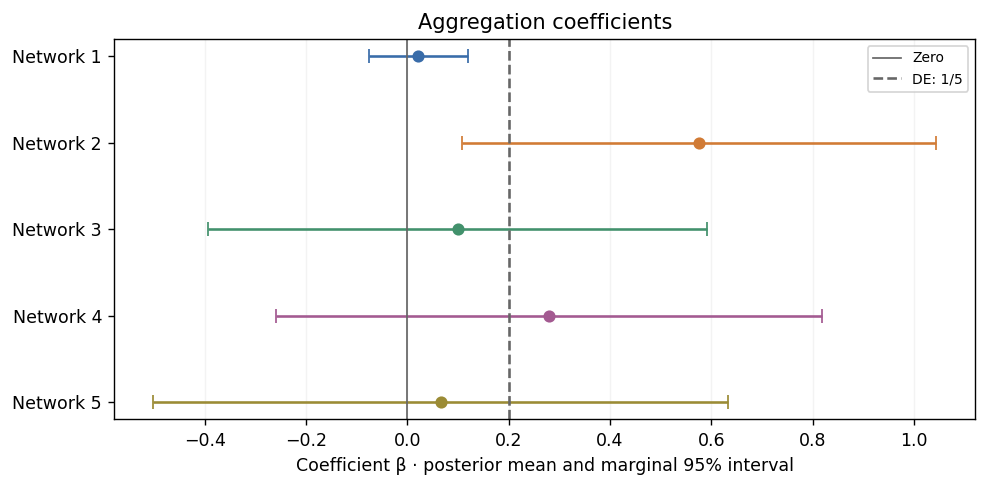
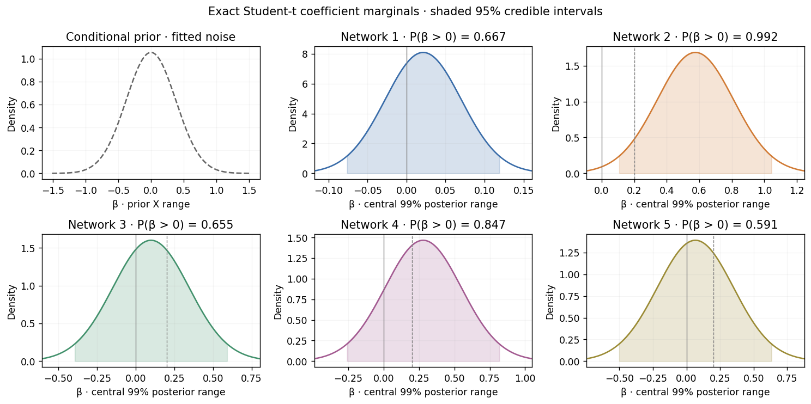
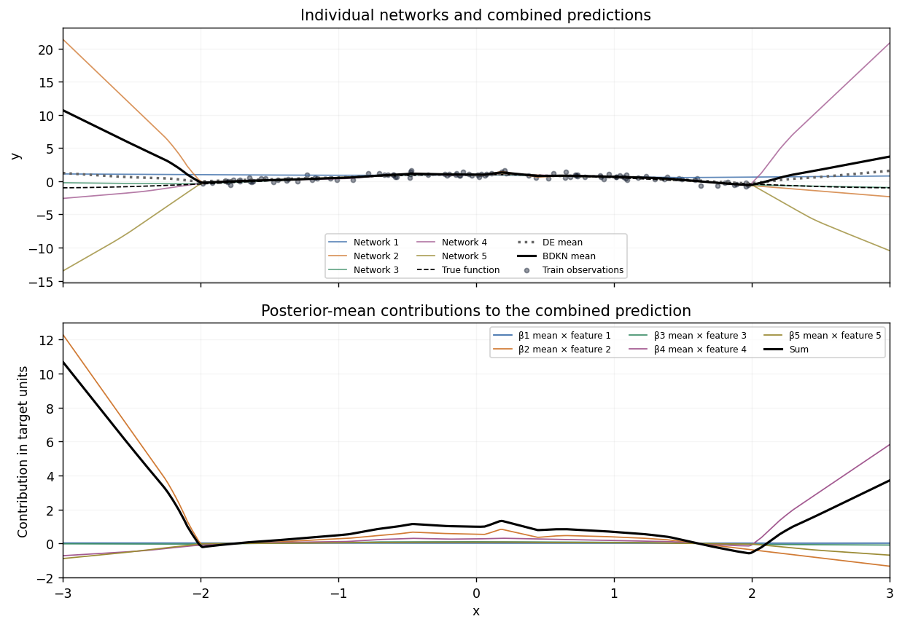

Regression comparison
Download resultsAggregation weights
Coefficients can be negative and need not sum to one. Intervals describe coefficient uncertainty; the dashed reference is DE’s fixed 1/H weight.
BDKN


Each density panel uses its own X range for readability; coefficient intervals above share a common axis. Prior reference conditions on fitted noise. Contribution shares use held-out inputs; test targets are used only for scoring.
| Network | β mean | 95% low | 95% high | P(β > 0) | Contribution share | Test RMSE | Test NLL |
|---|---|---|---|---|---|---|---|
| 1 | 0.29299 | -0.30370 | 0.88968 | 0.83384 | 0.29080 | 0.40601 | 2.19498 |
| 2 | 0.32588 | -0.25627 | 0.90802 | 0.86530 | 0.30631 | 0.35829 | 0.97832 |
| 3 | 0.09065 | -0.39933 | 0.58062 | 0.64282 | 0.08804 | 0.33808 | 1.01757 |
| 4 | 0.27580 | -0.29841 | 0.85002 | 0.82854 | 0.26186 | 0.32456 | 1.46765 |
| 5 | 0.05188 | -0.50796 | 0.61171 | 0.57274 | 0.05300 | 0.38945 | 2.51700 |
Functional repulsion · BDKN



Each density panel uses its own X range for readability; coefficient intervals above share a common axis. Prior reference conditions on fitted noise. Contribution shares use held-out inputs; test targets are used only for scoring.
| Network | β mean | 95% low | 95% high | P(β > 0) | Contribution share | Test RMSE | Test NLL |
|---|---|---|---|---|---|---|---|
| 1 | 0.12561 | -0.16673 | 0.41794 | 0.80200 | 0.29933 | 239.24034 | 140.38242 |
| 2 | 0.44741 | -0.02066 | 0.91548 | 0.96960 | 0.01058 | 1.30995 | 41.93548 |
| 3 | 0.03402 | -0.03706 | 0.10511 | 0.82769 | 0.07523 | 219.69188 | 33.89066 |
| 4 | 0.28005 | -0.23544 | 0.79555 | 0.85815 | 0.61013 | 240.87231 | 86.44037 |
| 5 | 0.14883 | -0.31746 | 0.61512 | 0.73599 | 0.00473 | 1.48067 | 56.07509 |
Weight repulsion · BDKN



Each density panel uses its own X range for readability; coefficient intervals above share a common axis. Prior reference conditions on fitted noise. Contribution shares use held-out inputs; test targets are used only for scoring.
| Network | β mean | 95% low | 95% high | P(β > 0) | Contribution share | Test RMSE | Test NLL |
|---|---|---|---|---|---|---|---|
| 1 | 0.37216 | -0.18274 | 0.92707 | 0.90683 | 0.23702 | 10.01646 | 103.90078 |
| 2 | 0.22206 | -0.37827 | 0.82239 | 0.76763 | 0.39710 | 23.76938 | 16.41187 |
| 3 | 0.07979 | -0.38953 | 0.54910 | 0.63170 | 0.15325 | 28.41891 | 174409390.85076 |
| 4 | 0.22168 | -0.34567 | 0.78903 | 0.77997 | 0.17281 | 10.71016 | 13.74769 |
| 5 | 0.14625 | -0.38567 | 0.67818 | 0.70668 | 0.03982 | 3.93448 | 3713385.59651 |
First-order repulsion · BDKN



Each density panel uses its own X range for readability; coefficient intervals above share a common axis. Prior reference conditions on fitted noise. Contribution shares use held-out inputs; test targets are used only for scoring.
| Network | β mean | 95% low | 95% high | P(β > 0) | Contribution share | Test RMSE | Test NLL |
|---|---|---|---|---|---|---|---|
| 1 | 0.02135 | -0.07621 | 0.11892 | 0.66748 | 0.00779 | 1.10024 | 1.18442 |
| 2 | 0.57564 | 0.10731 | 1.04398 | 0.99175 | 0.59135 | 5.30331 | 5391517.19098 |
| 3 | 0.09920 | -0.39352 | 0.59193 | 0.65479 | 0.02422 | 0.36269 | 0.39148 |
| 4 | 0.27956 | -0.25863 | 0.81775 | 0.84738 | 0.30411 | 5.38037 | 392.97324 |
| 5 | 0.06599 | -0.50128 | 0.63327 | 0.59103 | 0.07253 | 3.74824 | 1177.12078 |